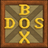
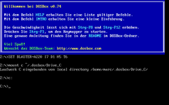
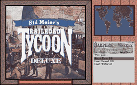
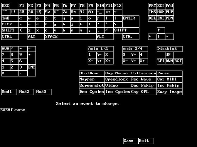
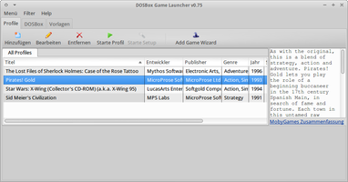

DOSBox
Dieser Artikel wurde für die folgenden Ubuntu-Versionen getestet:
Ubuntu 16.04 Xenial Xerus
Ubuntu 14.04 Trusty Tahr
Zum Verständnis dieses Artikels sind folgende Seiten hilfreich:

DOSBox  ist ein DOS-Emulator, welcher die Umgebung von x86-Computern (inklusive Eingabegeräten, RAM, CD-ROM, CPU und MS-DOS) nachbildet. Das Ausführen DOS-basierter Software ist daher auch unter Ubuntu möglich.
ist ein DOS-Emulator, welcher die Umgebung von x86-Computern (inklusive Eingabegeräten, RAM, CD-ROM, CPU und MS-DOS) nachbildet. Das Ausführen DOS-basierter Software ist daher auch unter Ubuntu möglich.
Einige Spiele laufen nur mit Glide-Grafikkarten.
|  |
| DOSBox |
|  |
| Railroad Tycoon Deluxe |
Installation¶
DOSBox ist in den offiziellen Paketquellen enthalten und wird mit dem folgenden Paket installiert [1]:
dosbox (universe)
 mit apturl
mit apturl
Paketliste zum Kopieren:
sudo apt-get install dosbox
sudo aptitude install dosbox
Erste Schritte¶
Beim ersten Programmstart wird die Konfigurationsdatei ~/.dosbox/dosbox-VERSION.conf mit Standard-Einstellungen angelegt (VERSION steht für die jeweilige DOSBox-Version). Eine vollständige Beispieldatei bietet der Abschnitt dosbox.conf.
Groß-/Kleinschreibung¶
DOSBox für Linux unterliegt der allgemeinen "Einschränkung", dass die Dateinamen – im Gegensatz zu Windows – die exakte Groß-/Kleinschreibung aufweisen müssen. Es kann dadurch vorkommen, dass Programme nicht gefunden werden. In diesem Fall ist es notwendig, die Dateinamen in der richtigen Groß-/Kleinschreibung anzugeben, wie sie auch im Dateimanager angezeigt werden.
Spracheinstellung¶
Um DOSBox auf Deutsch und mit dem deutschen Tastaturlayout zu starten, benötigt man das zugehörige deutsche Sprachpaket, welches als "German languagefile+Readme" von der offiziellen Website heruntergeladen werden kann. Diese Datei entpackt [2] man in den versteckten Ordner .dosbox im persönlichen Verzeichnis.
Darin befindet sich eine angepasste Konfigurationsdatei ~/.dosbox/dosbox-VERSION.conf, in der bereits die Einstellungen angepasst wurden: Es ist dafür keine Nacharbeit mehr notwendig. Die orginale dosbox-VERSION.conf wird überschrieben
language=german-VERSION.lang
Tastaturlayout¶
Die Ubuntu-Version hat nach der Installation noch kein Tastaturlayout eingerichtet. Um das deutsche Tastaturlayout einzustellen, ändert man in der Konfigurationsdatei [3] ~/.dosbox/dosbox-VERSION.conf die Zeile …
keyboardlayout=auto
… wie folgt:
keyboardlayout=gr
Die weiteren Optionen der Konfigurationsdatei kann man im DOSBox-Wiki nachschlagen.
|  |
| Keymapper |
Keymapper¶
Um die Tastaturbelegung zu ändern, startet man den Keymapper mit der Tastenkombination
Strg +
F1 oder durch Eingabe von -STARTMAPPER. Nun können Änderungen an der virtuellen Tastatur oder am virtuellen Joystick vorgenommen werden. Diese virtuellen Geräte entsprechen den Tasten, die DOSBox an die ausgeführten Programme übergibt. Durch einen Mausklick auf die jeweilige Taste sieht man, mit welcher Funktion diese derzeit verknüpft ist. Änderungen können abschließend gespeichert werden. Die vorgenommenen Einstellungen werden unter ~/.dosbox/mapper.txt abgelegt. Eine detaillierte Anleitung ist in der dem Sprachpaket beigelegten Datei README_de.txt zu finden.
Laufwerk C: erstellen (Datenaustausch)¶
Zur Installation von Programmen, aber auch zum Austausch von Dateien mit dem Wirtsystem Ubuntu, sollte ein Ordner als Laufwerk C: gemountet werden. Am Besten wird dazu im Konfigurationsverzeichnis unter Ubuntu ein Ordner ~/.dosbox/drive_c erstellt:
mkdir -p ~/.dosbox/drive_c
Dieses Verzeichnis sollte nun als Autostart beim Starten von DOSBox jeweils ausgeführt werden. Dazu wird der mount-Befehl in die Konfigurationsdatei ~/.dosbox/dosbox-VERSION.conf im Abschnitt [autoexec] (am Ende der Datei) eingefügt:
[autoexec] # Lines in this section will be run at startup. mount c ~/.dosbox/drive_c c:
Nun wird bei jedem Programmstart der Ordner als Laufwerk C: eingehängt und in dieses Laufwerk gewechselt. Dort können nun Programme installiert und ausgeführt werden.
Midi¶
Timidity¶
Um die Midi-Emulation des Systemdienstes Timidity zu nutzen, trägt man im Abschnitt [midi] der Konfigurationsdatei dosbox.conf die folgenden Werte ein:
mpu401=intelligent mididevice=alsa midiconfig=128:2
Hinweis:
Findet dosbox den Timidity-Port nicht, muss ggf. Timidity erst als Server gestartet werden:
timidity -iA -B2,8 -Os1l -s 44100
MIDI-Ports herausfinden¶
Sollte dosbox die folgende Meldung ausgeben,
ALSA:Can't subscribe to MIDI port
kann man das Programm pmidi verwenden, um alle im System vorhandenen MIDI-Ports herauszufinden:
pmidi -l
Einen der dort aufgelisteten Ports (z.B. 20:0) trägt man anschließend im Abschnitt [midi] der Konfigurationsdatei dosbox.conf ein:
mpu401=intelligent mididevice=alsa midiconfig=20:0
Bedienung¶
Befehle¶
DOSBox startet in den Standardeinstellungen auf Laufwerk Z:, welches DOSBox als internes Basislaufwerk dient und auf dem sämtliche in DOSBox selber verfügbaren Befehle ausgeführt werden können. Um ein Spiel zu starten, wechselt man in das Verzeichnis des Spiels und führt die jeweilige *.exe, *.com oder *.bat Datei aus, indem man den vollständigen Dateinamen angibt.
Die folgende Liste erläutert beispielhaft häufig benötigte Befehle:
| Befehle | |
| Befehl | Beschreibung |
| mount LAUFWERKSBUCHSTABE ORDNER | Um auf eine Festplatte zuzugreifen, muss man einmal das jeweilige Laufwerk einbinden. |
| mount a ~/.dosbox/drive_a -T floppy | Bindet das Verzeichnis ~/.dosbox/drive_a als virtuelles Diskettenlaufwerk A: ein. |
| mount c ~/.dosbox/drive_c | Bindet das Verzeichnis ~/.dosbox/drive_c als virtuelles Laufwerk C: ein. |
| mount d /media/BENUTZERNAME/LABEL -t cdrom -label LABEL -ioctl -usecd 0 | Bindet ein DVD- oder CD-Laufwerk als virtuelles CD-Laufwerk D: ein. BENUTZERNAME muss dabei durch den eigenen Benutzernamen, LABEL durch den im Dateimanager angezeigten Namen der CD bzw. der DVD ersetzt werden. |
| mount d ~/.dosbox/ORDNER -t cdrom | Bindet ein beliebiges Verzeichnis als virtuelles CD-Laufwerk D: ein. |
| imgmount D ~/[Pfad]/image.iso -t iso | CD-ROM Abbild einbinden (Pfad und Dateiname muss angepasst werden), weitere Parameter |
| cd ORDNER | Wechselt in das Verzeichnis ORDNER. |
| dir | Zeigt die Dateien und Ordner im gegenwärtigen Verzeichnis an. |
| d: | Wechselt auf das Laufwerk D:, sofern es eingebunden ist. |
| cd .. | Wechselt in das nächsthöhere Verzeichnis. |
| help | Um sich in DOSBox zurecht zu finden, braucht man die "alten" DOS-Befehle. Eine Übersicht erhält man mit diesem Befehl. |
Um Befehle nicht bei jedem Start erneut eintippen zu müssen, kann man sie auch in die Datei dosbox.conf im Abschnitt [autoexec] eintragen [3].
Virtuelle Laufwerke¶
Um ein permanentes virtuelles Laufwerk einzubinden, legt man im Verzeichnis ~/.dosbox einen neuen Ordner an (beispielsweise drive_c) und trägt in der Datei dosbox.conf im Abschnitt [autoexec] den Befehl ein [3], das den Ordner in DOSBox mit einem bestimmten Laufwerksbuchstaben einzubinden (beispielsweise c). Alle unter C: installierten Programme sind nun in DOSBox in c: (also in ~/.dosbox/drive_c) zu finden.
Beispiel:
[autoexec] mount c ~/.dosbox/drive_c
Hinweis:
DOSBox unterstützt die .iso- und .cue- und .bin-Imageformate. Daher können Images eingebunden werden.
dosbox.conf¶
Mit Raute (#) markierte Zeilen sind auskommentiert. Je nach verwendeter Version von DOSBox unterscheidet sich die zu verwendende Syntax minimal.
In diesem Beispiel wird davon ausgegangen, dass der Ordner ~/.dosbox/drive_c im Homeverzeichnis angelegt wurde.
# This is the configurationfile for DOSBox 0.74. (Please use the latest version of DOSBox) # Lines starting with a # are commentlines and are ignored by DOSBox. # They are used to (briefly) document the effect of each option. [sdl] # fullscreen: Start dosbox directly in fullscreen. (Press ALT-Enter to go back) # fulldouble: Use double buffering in fullscreen. It can reduce screen flickering, but it can also result in a slow DOSBox. # fullresolution: What resolution to use for fullscreen: original or fixed size (e.g. 1024x768). # Using your monitor's native resolution with aspect=true might give the best results. # If you end up with small window on a large screen, try an output different from surface. # windowresolution: Scale the window to this size IF the output device supports hardware scaling. # (output=surface does not!) # output: What video system to use for output. # Possible values: surface, overlay, opengl, openglnb, ddraw. # autolock: Mouse will automatically lock, if you click on the screen. (Press CTRL-F10 to unlock) # sensitivity: Mouse sensitivity. # waitonerror: Wait before closing the console if dosbox has an error. # priority: Priority levels for dosbox. Second entry behind the comma is for when dosbox is not focused/minimized. # pause is only valid for the second entry. # Possible values: lowest, lower, normal, higher, highest, pause. # mapperfile: File used to load/save the key/event mappings from. Resetmapper only works with the defaul value. # usescancodes: Avoid usage of symkeys, might not work on all operating systems. fullscreen=false fulldouble=false fullresolution=original windowresolution=original output=surface autolock=true sensitivity=100 waitonerror=true priority=higher,normal mapperfile=mapper-0.74.map usescancodes=true [dosbox] # language: Select another language file. # machine: The type of machine tries to emulate. # Possible values: hercules, cga, tandy, pcjr, ega, vgaonly, svga_s3, svga_et3000, svga_et4000, svga_paradise, vesa_nolfb, vesa_oldvbe. # captures: Directory where things like wave, midi, screenshot get captured. # memsize: Amount of memory DOSBox has in megabytes. # This value is best left at its default to avoid problems with some games, # though few games might require a higher value. # There is generally no speed advantage when raising this value. language=german-0.74.lang machine=svga_s3 captures=capture memsize=16 [render] # frameskip: How many frames DOSBox skips before drawing one. # aspect: Do aspect correction, if your output method doesn't support scaling this can slow things down!. # scaler: Scaler used to enlarge/enhance low resolution modes. # If 'forced' is appended, then the scaler will be used even if the result might not be desired. # Possible values: none, normal2x, normal3x, advmame2x, advmame3x, advinterp2x, advinterp3x, hq2x, hq3x, 2xsai, super2xsai, supereagle, tv2x, tv3x, rgb2x, rgb3x, scan2x, scan3x. frameskip=0 aspect=false scaler=normal2x [cpu] # core: CPU Core used in emulation. auto will switch to dynamic if available and appropriate. # Possible values: auto, dynamic, normal, simple. # cputype: CPU Type used in emulation. auto is the fastest choice. # Possible values: auto, 386, 386_slow, 486_slow, pentium_slow, 386_prefetch. # cycles: Amount of instructions DOSBox tries to emulate each millisecond. # Setting this value too high results in sound dropouts and lags. # Cycles can be set in 3 ways: # 'auto' tries to guess what a game needs. # It usually works, but can fail for certain games. # 'fixed #number' will set a fixed amount of cycles. This is what you usually need if 'auto' fails. # (Example: fixed 4000). # 'max' will allocate as much cycles as your computer is able to handle. # # Possible values: auto, fixed, max. # cycleup: Amount of cycles to decrease/increase with keycombo.(CTRL-F11/CTRL-F12) # cycledown: Setting it lower than 100 will be a percentage. core=auto cputype=auto cycles=auto cycleup=10 cycledown=20 [mixer] # nosound: Enable silent mode, sound is still emulated though. # rate: Mixer sample rate, setting any device's rate higher than this will probably lower their sound quality. # Possible values: 44100, 48000, 32000, 22050, 16000, 11025, 8000, 49716. # blocksize: Mixer block size, larger blocks might help sound stuttering but sound will also be more lagged. # Possible values: 1024, 2048, 4096, 8192, 512, 256. # prebuffer: How many milliseconds of data to keep on top of the blocksize. nosound=false rate=44100 blocksize=1024 prebuffer=20 [midi] # mpu401: Type of MPU-401 to emulate. # Possible values: intelligent, uart, none. # mididevice: Device that will receive the MIDI data from MPU-401. # Possible values: default, win32, alsa, oss, coreaudio, coremidi, none. # midiconfig: Special configuration options for the device driver. This is usually the id of the device you want to use. # See the README/Manual for more details. mpu401=intelligent device=alsa config=128:2 [sblaster] # sbtype: Type of Soundblaster to emulate. gb is Gameblaster. # Possible values: sb1, sb2, sbpro1, sbpro2, sb16, gb, none. # sbbase: The IO address of the soundblaster. # Possible values: 220, 240, 260, 280, 2a0, 2c0, 2e0, 300. # irq: The IRQ number of the soundblaster. # Possible values: 7, 5, 3, 9, 10, 11, 12. # dma: The DMA number of the soundblaster. # Possible values: 1, 5, 0, 3, 6, 7. # hdma: The High DMA number of the soundblaster. # Possible values: 1, 5, 0, 3, 6, 7. # sbmixer: Allow the soundblaster mixer to modify the DOSBox mixer. # oplmode: Type of OPL emulation. On 'auto' the mode is determined by sblaster type. All OPL modes are Adlib-compatible, except for 'cms'. # Possible values: auto, cms, opl2, dualopl2, opl3, none. # oplemu: Provider for the OPL emulation. compat might provide better quality (see oplrate as well). # Possible values: default, compat, fast. # oplrate: Sample rate of OPL music emulation. Use 49716 for highest quality (set the mixer rate accordingly). # Possible values: 44100, 49716, 48000, 32000, 22050, 16000, 11025, 8000. sbtype=sb16 sbbase=220 irq=7 dma=1 hdma=5 sbmixer=true oplmode=auto oplemu=default oplrate=44100 [gus] # gus: Enable the Gravis Ultrasound emulation. # gusrate: Sample rate of Ultrasound emulation. # Possible values: 44100, 48000, 32000, 22050, 16000, 11025, 8000, 49716. # gusbase: The IO base address of the Gravis Ultrasound. # Possible values: 240, 220, 260, 280, 2a0, 2c0, 2e0, 300. # gusirq: The IRQ number of the Gravis Ultrasound. # Possible values: 5, 3, 7, 9, 10, 11, 12. # gusdma: The DMA channel of the Gravis Ultrasound. # Possible values: 3, 0, 1, 5, 6, 7. # ultradir: Path to Ultrasound directory. In this directory # there should be a MIDI directory that contains # the patch files for GUS playback. Patch sets used # with Timidity should work fine. gus=false gusrate=44100 gusbase=240 gusirq=5 gusdma=3 ultradir=C:\ULTRASND [speaker] # pcspeaker: Enable PC-Speaker emulation. # pcrate: Sample rate of the PC-Speaker sound generation. # Possible values: 44100, 48000, 32000, 22050, 16000, 11025, 8000, 49716. # tandy: Enable Tandy Sound System emulation. For 'auto', emulation is present only if machine is set to 'tandy'. # Possible values: auto, on, off. # tandyrate: Sample rate of the Tandy 3-Voice generation. # Possible values: 44100, 48000, 32000, 22050, 16000, 11025, 8000, 49716. # disney: Enable Disney Sound Source emulation. (Covox Voice Master and Speech Thing compatible). pcspeaker=true pcrate=44100 tandy=auto tandyrate=44100 disney=true [joystick] # joysticktype: Type of joystick to emulate: auto (default), none, # 2axis (supports two joysticks), # 4axis (supports one joystick, first joystick used), # 4axis_2 (supports one joystick, second joystick used), # fcs (Thrustmaster), ch (CH Flightstick). # none disables joystick emulation. # auto chooses emulation depending on real joystick(s). # (Remember to reset dosbox's mapperfile if you saved it earlier) # Possible values: auto, 2axis, 4axis, 4axis_2, fcs, ch, none. # timed: enable timed intervals for axis. Experiment with this option, if your joystick drifts (away). # autofire: continuously fires as long as you keep the button pressed. # swap34: swap the 3rd and the 4th axis. can be useful for certain joysticks. # buttonwrap: enable button wrapping at the number of emulated buttons. joysticktype=auto timed=true autofire=false swap34=false buttonwrap=false [serial] # serial1: set type of device connected to com port. # Can be disabled, dummy, modem, nullmodem, directserial. # Additional parameters must be in the same line in the form of # parameter:value. Parameter for all types is irq (optional). # for directserial: realport (required), rxdelay (optional). # (realport:COM1 realport:ttyS0). # for modem: listenport (optional). # for nullmodem: server, rxdelay, txdelay, telnet, usedtr, # transparent, port, inhsocket (all optional). # Example: serial1=modem listenport:5000 # Possible values: dummy, disabled, modem, nullmodem, directserial. # serial2: see serial1 # Possible values: dummy, disabled, modem, nullmodem, directserial. # serial3: see serial1 # Possible values: dummy, disabled, modem, nullmodem, directserial. # serial4: see serial1 # Possible values: dummy, disabled, modem, nullmodem, directserial. serial1=dummy serial2=dummy serial3=disabled serial4=disabled [dos] # xms: Enable XMS support. # ems: Enable EMS support. # umb: Enable UMB support. # keyboardlayout: Language code of the keyboard layout (or none). xms=true ems=true umb=true keyboardlayout=gr [ipx] # ipx: Enable ipx over UDP/IP emulation. ipx=false [autoexec] mount c ~/.dosbox/drive_c c:
Hinweis:
Für einige Spiele kann es notwendig sein, eine eigene dosbox.conf zu verwenden. Die Datei mit einem leicht veränderten Namen (z.B. dosboxSPIELTITEL.conf im Verzeichnis ablegen. Über dosbox -conf dosboxSPIELTITEL.conf SPIELTITEL.EXE kann das Programm nun mit der richtigen Datei gestartet [9] werden.
IPX-Netzwerk¶
DOSBox unterstützt auch das IPX-Protokoll. Nachdem das Feature in der dosbox.conf aktiviert wurde, lässt sich mit folgenden Befehlen ein Netzwerk einrichten und verwalten:
| IPX | |
| Befehl | Funktion |
| ipxnet startserver [Port] | Startet einen IPX-Server auf dem angegebenen Port. |
| ipxnet stopserver | Beendet einen Server. |
| ipxnet connect [IP-Adresse] [Port] | Verbindet mit einem Server. |
| ipxnet disconnect | Trennt die Verbindung mit einem Server. |
Aufnahme¶
Screenshots (als *.png), Soundaufnahmen (als *.wav), Raw-MIDI-Daten und Videoclips werden im Unterverzeichnis ~/.dosbox/capture gespeichert. Das Verzeichnis muss im Vorfeld angelegt werden. Unter Tastenkürzel sind die entsprechenden Tastenkombinationen hinterlegt.
Nautilus-Verknüpfung¶
Verknüpfungen zu *.exe-, *.com- oder *.bat-Dateien können angelegt werden. Als benutzerdefinierten Befehl verwendet man dosbox. Nun können diese Dateien über Nautilus gestartet werden.
Pfeiltasten¶
Wenn die Pfeiltasten nicht funktionieren, hilft eventuell die Einstellung usescancodes=false im Abschnitt [sdl] der Datei dosbox.conf. In diesem Fall muss das Tastaturlayout auf none gestellt werden, da DOSBox das Tastaturlayout des X-Servers verwendet.
Tastenkürzel¶
| DOSBox | |
| Taste(n) | Funktion |
| Tab ⇆ | Autovervollständigung von Befehlen |
| Alt + F7 | Frameskip tiefer stellen |
| Alt + F8 | Frameskip höher stellen |
| Alt + ⏎ | Vollbildmodus an/aus |
| Fn + Alt + ⏎ | Vollbildmodus an/aus (Laptoptastatur) |
| Alt + Pause | Emulation unterbrechen |
| Strg + F1 | Keymapper starten |
| Strg + F4 | Disketten-Image wechseln; Verzeichnisstruktur neu lesen |
| Strg + F5 | Screenshot als .png-Datei abspeichern |
| Strg + Alt + F5 | Bildschirmausgabe und Sound als Videoclip speichern an/aus |
| Strg + F6 | Soundausgabe in .wav-Datei schreiben an/aus |
| Strg + Alt + F7 | OPL-Daten aufzeichnen an/aus |
| Strg + Alt + F8 | Raw-MIDI-Daten aufzeichnen an/aus |
| Strg + F7 | Frames überspringen -1 |
| Strg + F8 | Frames überspringen +1 |
| Strg + F9 | DOSBox schließen |
| Strg + ⇧ + F10 | Maus erfassen/freigeben |
| Strg + F10 | Maus freigeben |
| Strg + F11 | Emulation verlangsamen (DOSBox-Cycles verringern) |
| Strg + F12 | Emulation beschleunigen (DOSBox-Cycles erhöhen) |
| Alt + F12 | Drosselung aufheben (Turbo-Knopf) |
Tipps¶
DOS-Extender austauschen¶
Viele für DOS geschriebene Spiele verwenden einen DOS-Extender und liefern die dafür benötigte Datei DOS4GW.EXE mit. Diese Datei kann normalerweise problemlos gegen die modernere Variante Advanced DOS Extender ausgetauscht werden, wodurch fortan etwas Rechenleistung eingespart werden kann.
Der neue Extender muss lediglich heruntergeladen  , entpackt[2] und die alte Datei (welche sich im Spielverzeichnis befinden sollte) durch die neue ersetzt werden.
, entpackt[2] und die alte Datei (welche sich im Spielverzeichnis befinden sollte) durch die neue ersetzt werden.
Mauszeiger¶
Damit der Mauszeiger nicht im DOSBox-Fenster gefangen wird, ändert man in der Datei dosbox.conf im Abschnitt [sdl] die Zeile:
autolock=true
wie folgt:
autolock=false
|  |
| DOSBox Game Launcher |
DOSBox Game Launcher¶
Ein alternatives Frontend für DOSBox stellt der in Java geschriebene DOSBox Game Launcher (DBGL) dar. Man kann auf der Projektseite eine entsprechende Linux-Variante (32-/64-Bit) herunterladen (z.B. nach ~/Downloads). Im Anschluss entpackt [2] man das Archiv und verschiebt den neu entstandenen Ordner, welcher z.B. dbgl076_64bit lauten kann, mit Root-Rechten [8] nach /opt/dbgl [4]:
sudo mv dbgl076_64bit /opt/dbgl
Anschließend legt man eine symbolische Verknüpfung an:
sudo ln -s /opt/dbgl/dbgl /usr/local/bin/dbgl
Anschließend startet man das Programm [9] mit dem Befehl dbgl.
Einrichtung¶
Die Programmsprache lässt sich im Menü unter "File → Adjust settings" und dort im Reiter "General" auf Deutsch umstellen. Nach einem Neustart des Programms wird die Änderung übernommen.
Im DBGL können für jedes auszuführende DOS-Programm Profile angelegt werden. Vorlagen für die meisten DOS-Spiele können komfortabel über "Hinzufügen" hinzugefügt werden, das heißt, man gibt vorher den Suchbegriff im Feld "Title" ein und klickt auf die benachbarte Schaltfläche "Abfrage bei MobyGames". Daraufhin erscheint ein Dialog, in dem man einen der Suchtreffer ins Profil laden kann. Anschließend hinterlegt man im Reiter "Mounting" unter dem Punkt "Starten" den Pfad zur Startdatei. Anschließend kann man das Profil aufrufen.
Problembehebung¶
Stotternder Sound¶
Um das Soundproblem zu lösen, mit einem Editor [3] die Datei dosbox.conf abändern:
rate=44100 prebuffer=50
Programm zu langsam¶
Läuft ein Programm extrem langsam, kann man mit einem Editor die Datei dosbox.conf wie folgt abändern:
core=auto
… ändern zu:
core=dynamic
Hinweis:
Wenn diese Lösung nicht greift, dann kann es auch am Sound liegen und somit dessen Abschaltung (also No Sound bei Sound-Settings des betreffenden Programmes) Abhilfe schaffen.
Exit to error: DRC64:Unhandled memory reference¶
Wenn DOSBox mit diesem Fehler abstürzt, dann muss man mit einem Editor in der Datei dosbox.conf den Eintrag:
core=auto
Ändern in:
core=normal
Oder :
core=simple
Hinweis:
Um die Fehlermeldung einsehen zu können, muss man das Programm aus einem Terminal heraus mit dem Befehl dosbox starten.
Links¶
CONQUESTS OF CAMELOT: The Search for the Grail
- bereitgestellt von Christy MarxCONQUESTS OF THE LONGBOW: The Legend of Robin Hood
- bereitgestellt von Christy Marx


- Erstellt mit Inyoka
-
 2004 – 2017 ubuntuusers.de • Einige Rechte vorbehalten
2004 – 2017 ubuntuusers.de • Einige Rechte vorbehalten
Lizenz • Kontakt • Datenschutz • Impressum • Serverstatus -
Serverhousing gespendet von